ОТДЕЛЕНИЕ ГАНДБОЛА УОР №2
-
Аккредитация СМИ на кубок мэра Москвы 2021
Напоминаем, что в связи с сохранением рисков распространения COVID-19 и Регламентом по организации и проведению официальных физкультурных и спортивных...
-
Четвертый сезон “Спортивных выходных” стартует 15 мая!
15 мая стартует четвертый сезон популярного проекта «Спортивные выходные», который на этот раз продлится почти 5 месяцев. В четвертом сезоне проект вернется в парки.
-
В рамках проекта «Спортивные выходные» теперь можно подготовиться к сдаче нормативов ГТО
Занятия проводятся каждые субботу и воскресенье (до 10 октября) на территории ВДНХ, а также в парках «Южное Бутово», «Печатники» и 850-летия Москвы.
-
Московская команда завоевала бронзовую медаль чемпионата мира по синхронному фигурному катанию
В британском Ноттингеме завершился чемпионат мира по синхронному фигурному катанию среди юниоров.
-
MARSPO AWARDS 2021
Премия MarSpo Awards – профессиональная награда для спортивных клубов, федераций, лиг, брендов и агентств.